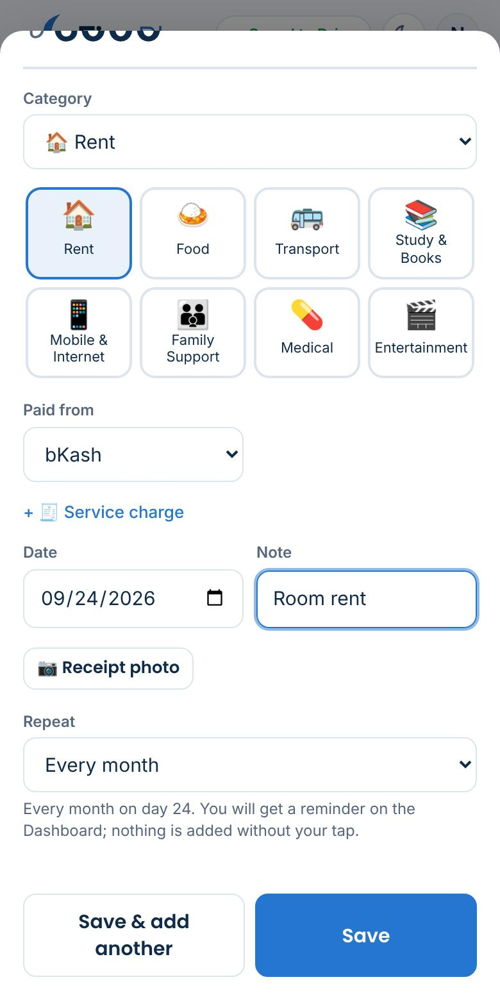
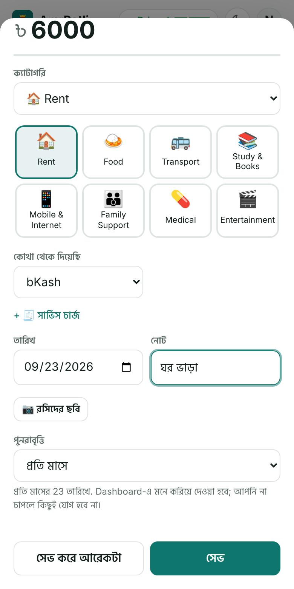
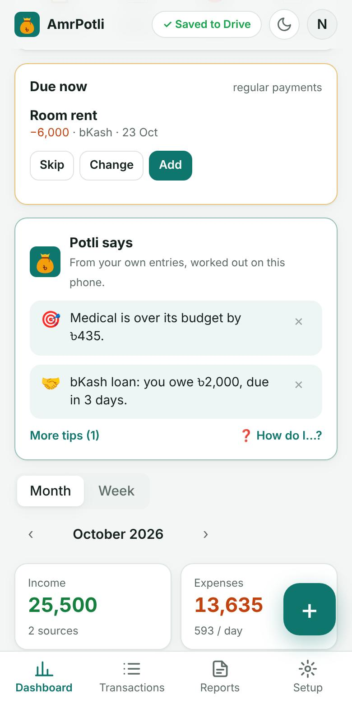
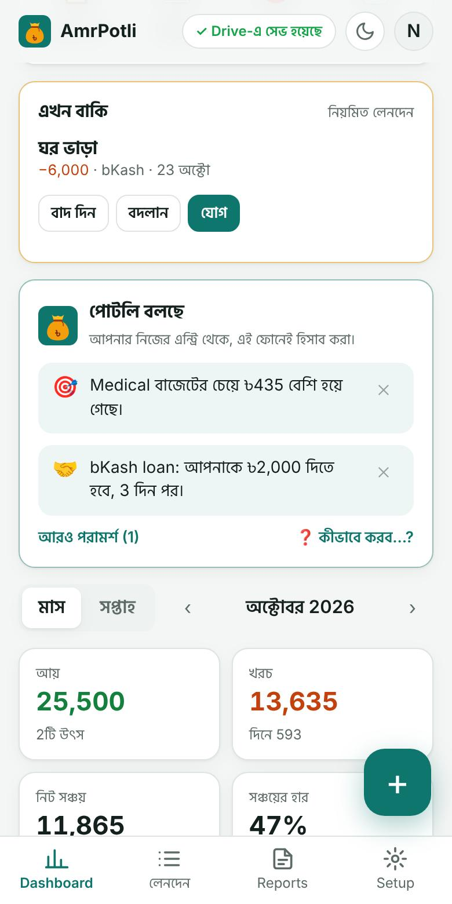
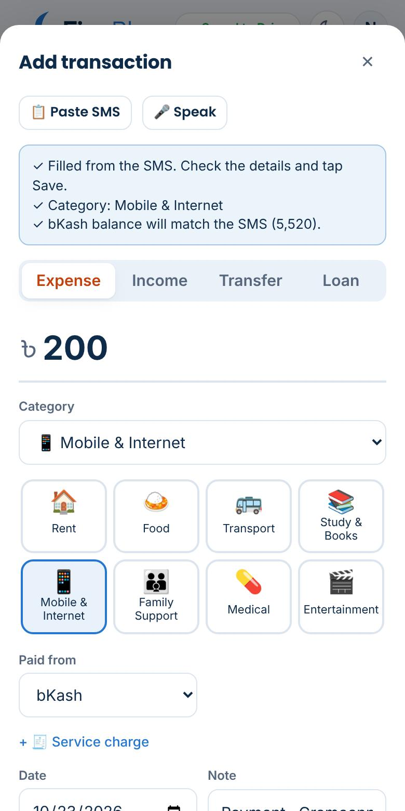
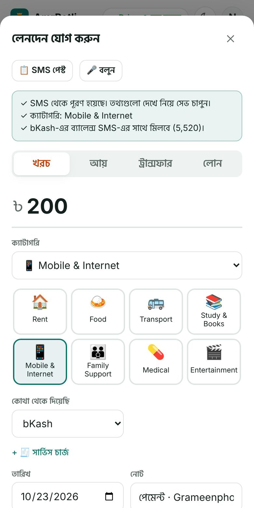
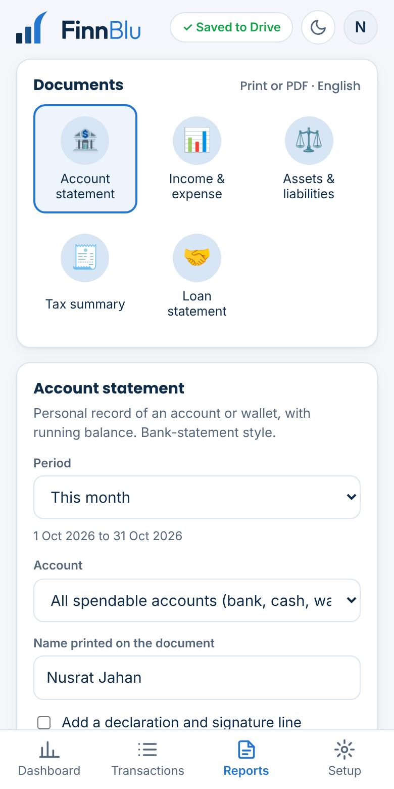
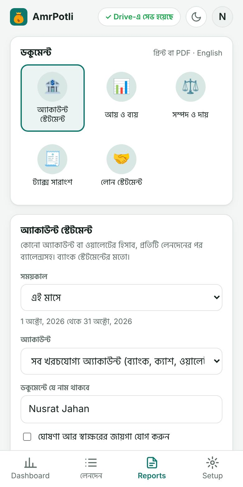

Step by stepধাপে ধাপে
Salary day: one entry, once a monthবেতনের দিন: মাসে একটা এন্ট্রি
Tap + → Income → Salary, into your bank account. Paste the bank's SMS instead and the amount and date fill themselves. Set Repeat → Every month, and next month AmrPotli asks “Salary due: Add?” on the Dashboard.+ → আয় → Salary, আপনার ব্যাংক অ্যাকাউন্টে। চাইলে ব্যাংকের SMS পেস্ট করুন, টাকা আর তারিখ নিজেই বসবে। পুনরাবৃত্তি → প্রতি মাসে দিন, পরের মাসে ড্যাশবোর্ডে আমার পোটলি জিজ্ঞেস করবে “বেতন এসেছে? যোগ করবেন?”


Set rent and bills to repeatভাড়া আর বিল রিপিট করে দিন
The first time you pay rent, electricity, gas, internet or a DPS installment, choose Repeat → Every month (or Every week). From then on it waits on the Dashboard on its day: tap Add if it was the same, Change if not, or Skip. Nothing is added without your tap.প্রথমবার ভাড়া, বিদ্যুৎ, গ্যাস, ইন্টারনেট বা ডিপিএসের কিস্তি দেওয়ার সময় পুনরাবৃত্তি → প্রতি মাসে (বা প্রতি সপ্তাহে) দিন। এরপর থেকে সেই দিনে ড্যাশবোর্ডে অপেক্ষা করবে: একই হলে “যোগ”, আলাদা হলে “বদলান”, না দিলে “বাদ দিন”। আপনার চাপ ছাড়া কিছু যোগ হয় না।
Coming up in the next days is listed too, so salary week never surprises you.সামনের কয়েক দিনে যা আসছে তাও দেখায়, তাই মাসের শেষে চমকে যেতে হয় না।
All your regular payments are in Setup → Regular payments: pause, change the amount or stop.সব নিয়মিত লেনদেন Setup → নিয়মিত লেনদেনে: থামান, অঙ্ক বদলান বা বন্ধ করুন।




Money sent home is spending, a transfer is notবাড়িতে পাঠানো টাকা খরচ, ট্রান্সফার নয়
Money you give to parents or family is Family Support, an expense. If someone is only keeping money for you, use Transfer to an account in their name instead, so it is still yours.বাবা-মা বা পরিবারকে দেওয়া টাকা Family Support, একটা খরচ। কেউ শুধু আপনার টাকা রাখছেন? তাহলে তাঁর নামের অ্যাকাউন্টে ট্রান্সফার দিন, টাকাটা আপনারই থাকবে।
Sending by bKash? Add the send-money or cash-out charge in Service charge; it is counted as spending under Service Charges, and suggested next time.বিকাশে পাঠালেন? সেন্ড মানি বা ক্যাশ আউটের চার্জ সার্ভিস চার্জে লিখুন; এটা Service Charges খরচে যায়, আর পরের বার নিজেই দেখায়।


Grow your savings, and see them growসঞ্চয় বাড়ান, বাড়তে দেখুন
Add your DPS, FDR or savings account in Setup → Accounts with type Investment, and give it a monthly target. Money you move there is a Transfer: it is counted as saved, not spent.Setup → অ্যাকাউন্টে আপনার ডিপিএস, এফডিআর বা সঞ্চয়ী অ্যাকাউন্ট Investment ধরনে যোগ করুন, মাসিক লক্ষ্য দিন। সেখানে টাকা সরালে সেটা ট্রান্সফার: জমা হিসেবে ধরা হয়, খরচ নয়।
Set a monthly savings goal in Setup. The Dashboard shows net saved, your savings rate, and a bar towards the goal.Setup-এ মাসিক সঞ্চয়ের লক্ষ্য দিন। ড্যাশবোর্ডে নিট সঞ্চয়, সঞ্চয়ের হার আর লক্ষ্যের দিকে একটা বার দেখাবে।


Loans and EMIs with installmentsকিস্তিসহ ধার ও লোন
Borrowed from a bank, office or a friend? + → Loan → I borrowed money. Add the number of monthly installments and the total interest if any: the Loans card then shows “installment 2 of 3” and the next amount and date.ব্যাংক, অফিস বা বন্ধুর কাছ থেকে ধার নিয়েছেন? + → লোন → আমি টাকা ধার নিয়েছি। মাসিক কিস্তির সংখ্যা আর মোট সুদ (থাকলে) দিন: ধারের কার্ডে দেখাবে “৩টির ২য় কিস্তি”, পরের অঙ্ক আর তারিখ।
Each payment: tap Repay next to the lender. Only the interest counts as spending; the rest is paying back what you borrowed.প্রতিবার দেওয়ার সময় নামের পাশে “শোধ করুন” চাপুন। শুধু সুদটা খরচ ধরা হয়; বাকিটা নেওয়া টাকা ফেরত দেওয়া।


Tax time and paperworkট্যাক্স আর কাগজপত্রের সময়
Reports → Tax summary adds up a fiscal year (July to June) of income, spending and assets, as a starting point for your return. Account statement, Income & expense, Assets & liabilities and Loan statement are ready to print or save as PDF.Reports → ট্যাক্স সারাংশ এক অর্থবছরের (জুলাই থেকে জুন) আয়, খরচ আর সম্পদ যোগ করে দেয়, রিটার্নের শুরু হিসেবে। অ্যাকাউন্ট স্টেটমেন্ট, আয় ও ব্যয়, সম্পদ ও দায় আর ধারের স্টেটমেন্ট প্রিন্ট বা PDF করার জন্য তৈরি।

